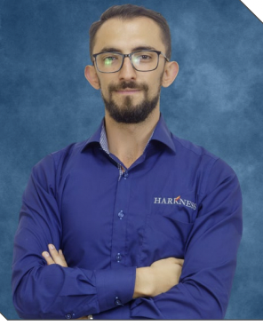

¿Quienes Somos?
Los Profesores Harkness son esenciales para el aprendizaje de nuestros estudiantes, cada uno ofrece la tolerancia y experiencia para brindarles un mejor metodo academico para llevar al limite nuestro potencial y asi los estudiantes conozcan sus fuertes en el aula
Chad Pendarves
Chad is our Contemporary World History professor, he really outshines the vibe around other professors. He is a well spoken teacher and knows perfectly how to connect with students. His classes consists mainly of History and War discussions which makes it really interesting. Kahoots are also implemented in order to make this discussions.
Daniela Arceo
Daniela is our Journal Writing professor, she teaches us how to write and why we do it. She uses different activities throughout her class so homework dont feel boring and repetitive. We discuss the styles of wrting and books that will help us on our writing skills in a future.
Oscar Chavez
Oscar is our Economy and Finances teacher, he knows how to make the student learn easily and also to make us laugh and dont feel heavy the class. He is really good in his subject, he usually delivers great information so us as young people learn how to use it later.

Daniel Avella
Daniel is our Philosophy, he is a really kind and creative teacher. He will always have an activity or topic that definitely wont be boring. He has great conflictive discussions. He is a teacher which is so good to listen and make you analyze what you are willing to express. No doubts his class is one of the most entertained.
Aaron Gómez
Aaron is our PE professor, he is like another student. He is willing to do what the class decides in order to have a good time and we all have nice laughs and a great sporty class. We usually play volleyball, basketball, football, flag, and in other cases even frizbee. His class will always be really moving so you got to be ready.
Salvador Vázquez
Salvador is our Computer professor, he is really a calm and comprehensive teacher. His topics are interesting but you have to pay attention because his exams are usually confusing. Overall he is a teacher who will listen to you if you are willing to do your work correctly when its time to.
Azucena Cervantes
Azucena is our Premiere Video and Web Pages professor, she is a exceptional teacher. Her subject may be stressful and of course needs its time and patience. Azucena will bring you the tools and teaching to create an amazing work with you and other students. It may be a overwhelming project but once you finish it youll notice how great her method is.
Carlos Lomeli
Carlitos is our Spanish professor, he is a fun teacher to have due its interction with students and many great experiences you will have during his class. He teaches many important topics in order to make our vocabulary extense. You will learn many factors about communication and how hes discussions will leave you unspoken by how impactful they are.